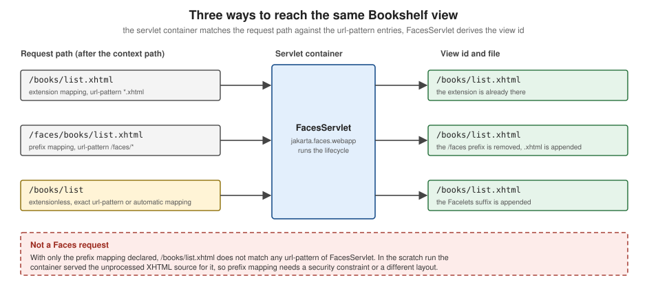

Project Setup
|
This content was generated with the assistance of AI and should be verified against the official documentation before being relied on in production. |
This page is written against Jakarta Faces 4.1 (API jakarta.faces:jakarta.faces-api:4.1.2, Jakarta EE 11, Servlet 6.1,
CDI 4.1), Mojarra 4.1.17 and Apache MyFaces Core 4.1.4, Java 17 or later (the examples are compiled for Java 21) and
Maven 3.9. Faces 4.0 (Jakarta EE 10, Java 11 or later) differs only where the text says so, mainly in the schema version
numbers and in the deprecation of full state saving that arrived with 4.1. Faces 5.0 (Jakarta EE 12, Java 21 or later) is
still a milestone (5.0.0-M9 on 2026-09-18) and is described as upcoming, never as current behaviour. The
descriptors, the pom and the mappings below were built into a scratch Bookshelf WAR (catalogue of books, authors and
reviews) and run on Tomcat 11.0.26 with Weld 6.0.4.Final, once with Mojarra and once with MyFaces; where the page says
"observed", it describes that run. The page covers what a Faces project consists of and how it is configured before the
first view is written; the first view itself is built on the getting started page of this section.
What a Faces Project Consists Of
A Faces application is an ordinary Jakarta EE web application: a WAR file with Facelets views (.xhtml), Java classes
for the backing beans and services, and a few descriptors. The Jakarta EE Tutorial lists the minimum as a web deployment
descriptor, a set of application classes and Faces pages, and optionally an application configuration resource file, tag
library descriptors and a set of JAR files. The tutorial still lists web.xml as required, but later sections of this
page show that a Servlet 6.1 container can map the FacesServlet without it; the table shows what each file is for and
whether the Bookshelf ships it.
| File or directory | Purpose | Spec or tutorial reference | Bookshelf |
|---|---|---|---|
|
Declares the WAR packaging, the compile-time API and, outside a Jakarta EE server, the Faces and CDI implementations. |
Maven, see the next section |
yes |
|
Declares the |
Faces 4.1 spec, chapter 11.1 |
yes |
|
Tells the CDI container which classes of the archive are beans. |
CDI 4.1 spec, bean archives |
yes |
|
The application configuration resource: locales, resource bundles, navigation rules, factories, listeners, flows. |
Faces 4.1 spec, chapter 11.3 |
yes |
|
Facelets templates that must not be requested directly by a browser. |
Facelets, see the templating page of this section |
yes |
|
Web resources (styles, scripts, images, composite components) served through the resource handler. |
Faces 4.1 spec, chapter 2.6 |
yes |
|
Resource library contracts (themes and template sets). |
Faces 4.1 spec, chapter 2.7 |
yes |
|
Lets a library contribute components, converters or listeners without touching the application. |
Faces 4.1 spec, chapter 11.3 |
no |
The ASP.NET Web Forms counterpart of this set of descriptors is Web.config together with the page directives; the
Web Forms configuration page shows how a Web
Forms site registers handlers and settings. In Faces the equivalent of a registered handler is the one servlet declared in
web.xml.
The Maven WAR
A Faces WAR needs two kinds of dependencies, and the difference between them decides almost every packaging problem.
-
The API, needed at compile time because the beans and components import
jakarta.faces.*,jakarta.inject.*andjakarta.enterprise.*. It is declared withprovidedscope so that Maven compiles against it but does not put it into the WAR. -
The implementation, needed at run time. A Jakarta EE server (GlassFish, WildFly, Payara, Open Liberty, TomEE) ships its own, so the WAR must not contain one. A plain servlet container such as Tomcat ships none, so the WAR must carry Mojarra or MyFaces and a CDI implementation.
The specification states the packaging rule directly: the Servlet, Tags and Faces API classes, and the Faces implementation classes, are normally made available to all web applications through the container’s shared facilities and therefore should not be included inside the web application archive.
Choosing the API dependency
| Coordinates | Contains | Use it when |
|---|---|---|
|
The whole Jakarta EE 11 Web Profile API; its pom pulls in |
The target is a Jakarta EE 11 server. One dependency covers the beans, services, entities and views of the application. |
|
The Platform API, a superset of the Web Profile. |
The application also uses specifications outside the Web Profile. |
|
Only the Faces API. |
The application is a thin layer over a few Faces classes, or the other specifications arrive separately (for example Servlet and CDI from Tomcat and Weld). |
The Faces 4.1 API artifact lives under the group id jakarta.faces (not jakarta.platform), and the latest
entry of the artifact’s metadata on Maven Central points at the 5.0.0-M9 milestone, so always pin 4.1.2 rather than
asking for the latest version.
The implementation dependencies
| Implementation | Coordinates | Notes |
|---|---|---|
Eclipse Mojarra 4.1.17 |
|
One JAR holding both the API classes and the implementation, so on Tomcat no separate |
Apache MyFaces Core 4.1.4 |
|
Two JARs. MyFaces lists Java 17, Servlet 6.1 or later, Expression Language 6.0 and CDI 4.1 as requirements, and JSTL 3.0 and Bean Validation 3.1 as optional ones. |
Weld Servlet 6.0.4.Final |
|
The CDI implementation for a servlet container. The Faces specification requires a container that supports CDI, which Tomcat alone does not provide. Weld’s current reference documentation describes Weld 7, which targets the next CDI line; pick the 6.0.x line for CDI 4.1. |
A complete pom.xml
The pom below builds a WAR that runs unchanged on a Jakarta EE 11 server and, with a Maven profile, on Tomcat 11 with either
implementation. Selecting a profile with -Ptomcat-mojarra or -Ptomcat-myfaces adds the run-time JARs to the WAR.
The Tomcat and Weld page of this section explains the Tomcat side in depth.
<?xml version="1.0" encoding="UTF-8"?>
<project xmlns="http://maven.apache.org/POM/4.0.0"
xmlns:xsi="http://www.w3.org/2001/XMLSchema-instance"
xsi:schemaLocation="http://maven.apache.org/POM/4.0.0 https://maven.apache.org/xsd/maven-4.0.0.xsd">
<modelVersion>4.0.0</modelVersion>
<groupId>org.example</groupId>
<artifactId>bookshelf</artifactId>
<version>1.0.0-SNAPSHOT</version>
<packaging>war</packaging>
<name>Bookshelf</name>
<properties>
<maven.compiler.release>21</maven.compiler.release>
<project.build.sourceEncoding>UTF-8</project.build.sourceEncoding>
<jakartaee.version>11.0.0</jakartaee.version>
<mojarra.version>4.1.17</mojarra.version>
<myfaces.version>4.1.4</myfaces.version>
<weld.version>6.0.4.Final</weld.version>
</properties>
<dependencies>
<!-- Compile-time API only: GlassFish, WildFly, Payara, Open Liberty and TomEE supply the runtime -->
<dependency>
<groupId>jakarta.platform</groupId>
<artifactId>jakarta.jakartaee-web-api</artifactId>
<version>${jakartaee.version}</version>
<scope>provided</scope>
</dependency>
</dependencies>
<build>
<finalName>bookshelf</finalName>
<plugins>
<plugin>
<groupId>org.apache.maven.plugins</groupId>
<artifactId>maven-war-plugin</artifactId>
<version>3.5.1</version>
</plugin>
</plugins>
</build>
<profiles>
<!-- Servlet container without Jakarta EE: Tomcat 11 + Mojarra + Weld -->
<profile>
<id>tomcat-mojarra</id>
<dependencies>
<dependency>
<groupId>org.glassfish</groupId>
<artifactId>jakarta.faces</artifactId>
<version>${mojarra.version}</version>
</dependency>
<dependency>
<groupId>org.jboss.weld.servlet</groupId>
<artifactId>weld-servlet-shaded</artifactId>
<version>${weld.version}</version>
</dependency>
</dependencies>
</profile>
<!-- The same container with Apache MyFaces instead of Mojarra -->
<profile>
<id>tomcat-myfaces</id>
<dependencies>
<dependency>
<groupId>org.apache.myfaces.core</groupId>
<artifactId>myfaces-api</artifactId>
<version>${myfaces.version}</version>
</dependency>
<dependency>
<groupId>org.apache.myfaces.core</groupId>
<artifactId>myfaces-impl</artifactId>
<version>${myfaces.version}</version>
</dependency>
<dependency>
<groupId>org.jboss.weld.servlet</groupId>
<artifactId>weld-servlet-shaded</artifactId>
<version>${weld.version}</version>
</dependency>
</dependencies>
</profile>
</profiles>
</project>The build commands, and what each produces:
mvn package # Jakarta EE server: target/bookshelf.war holds no Faces JAR
mvn package -Ptomcat-mojarra # Tomcat: Mojarra and Weld are packaged in WEB-INF/lib
mvn package -Ptomcat-myfaces # Tomcat: MyFaces and Weld are packaged in WEB-INF/libSource: Apache Maven WAR Plugin
In the scratch run the Mojarra profile put jakarta.faces-4.1.17.jar, weld-servlet-shaded-6.0.4.Final.jar and
jakarta.annotation-api-3.0.0.jar into WEB-INF/lib, and the MyFaces profile put myfaces-api-4.1.4.jar and
myfaces-impl-4.1.4.jar in their place. A few remarks about the pom:
-
maven.compiler.releaseis21because the examples use records; Faces 4.1 itself needs Java 17. Use17when the target server runs on Java 17. -
There is no
failOnMissingWebXmlproperty because the project ships aweb.xml. A WAR that omits it needs<failOnMissingWebXml>false</failOnMissingWebXml>as a property or in the War plugin configuration. -
A Gradle build uses the same coordinates and scopes (
compileOnlyfor the API); this section shows Maven only.
Declaring the FacesServlet in web.xml
Every Faces request goes through jakarta.faces.webapp.FacesServlet. The specification calls it the standard servlet
that provides the request processing lifecycle: on each request it obtains a FacesContext from the factory, runs the
lifecycle’s execute and render steps and releases the context. The servlet name is free, but the mapping must use the same
value.
A web.xml for Servlet 6.1 starts with this root element; the version attribute and the schema file are what a Jakarta EE
11 server expects:
<?xml version="1.0" encoding="UTF-8"?>
<web-app xmlns="https://jakarta.ee/xml/ns/jakartaee"
xmlns:xsi="http://www.w3.org/2001/XMLSchema-instance"
xsi:schemaLocation="https://jakarta.ee/xml/ns/jakartaee https://jakarta.ee/xml/ns/jakartaee/web-app_6_1.xsd"
version="6.1">
<display-name>Bookshelf</display-name>
<servlet>
<servlet-name>facesServlet</servlet-name>
<servlet-class>jakarta.faces.webapp.FacesServlet</servlet-class>
<load-on-startup>1</load-on-startup>
</servlet>
<servlet-mapping>
<servlet-name>facesServlet</servlet-name>
<url-pattern>*.xhtml</url-pattern>
</servlet-mapping>
</web-app>Source: Jakarta Faces 4.1 specification, 11.1.1 Servlet Definition and Jakarta EE Tutorial: Identifying the Servlet for Lifecycle Processing
load-on-startup makes the container initialise the servlet when the application is deployed instead of on the first
request. The web.xml, faces-config.xml and beans.xml files on this page validate against the schemas named in their
root elements (web-app_6_1.xsd, web-facesconfig_4_1.xsd, beans_4_1.xsd).
When the servlet is mapped for you
Since Servlet 3.0 the web.xml entry above is optional. The FacesServlet API documentation states that the servlet
is mapped automatically if it is not explicitly mapped in web.xml or web-fragment.xml and at least one of these
conditions holds:
-
a
faces-config.xmlfile is found inWEB-INF; -
a
faces-config.xmlfile, or a file whose name ends in.faces-config.xml, is found in theMETA-INFdirectory of a JAR on the classpath; -
the
jakarta.faces.CONFIG_FILEScontext parameter is declared; -
the set of classes handed to the runtime’s servlet container initializer is not empty. Those are the classes annotated with, or extending, the Faces types the API lists, among them
FacesConfig,ResourceDependency,FacesComponent,UIComponent,Converter,FacesConverter,ListenerFor,FacesBehaviorRenderer,Renderer,FacesValidatorandValidator.
When the servlet is mapped automatically, it receives four patterns: /faces/*, *.jsf, *.faces and *.xhtml. The
automatic *.xhtml mapping can be switched off with the context parameter jakarta.faces.DISABLE_FACESSERVLET_TO_XHTML.
The flowchart summarises the decision.
The same behaviour was observed on both implementations. A WAR whose web.xml has no servlet entry but ships
WEB-INF/faces-config.xml answered /index.xhtml, /faces/index.xhtml, /index.jsf and /index.faces, and
disabling the *.xhtml mapping made /index.xhtml return the unprocessed source while the other three kept working.
An explicit declaration is still recommended because it documents the URL space of the application, and because the
automatic mapping exposes four URL variants of every view instead of one.
The FacesServlet Mapping
The mapping decides which request paths are Faces requests and how FacesServlet derives the view id (the path of the
XHTML file) from the request path. The specification requires an implementation to support any valid url-pattern,
prefix or extension, and recommends /faces/* for prefix mapping and *.faces for extension mapping. The Jakarta EE
Tutorial uses *.xhtml and mentions extensionless URLs.

Table of the four mappings and what they do. The "observed" column describes the scratch run, which produced the same results with Mojarra 4.1.17 and MyFaces 4.1.4.
| Mapping | Declaration | Request URL for /books/list.xhtml |
Observed behaviour |
|---|---|---|---|
Extension, |
|
|
Views are served at their file names. A request to a file that does not exist, or to |
Extension, |
|
|
The view id is the path with the Facelets suffix put back. With only this mapping declared, |
Prefix, |
|
|
The prefix is removed to find the file. With only this mapping declared, |
Extensionless, exact |
|
|
One mapping per view. The Jakarta EE Tutorial describes this as manually exact-mapping the |
Source: Jakarta Faces 4.1 specification, 11.1.2 Servlet Mapping and Jakarta EE Tutorial: Identifying the Servlet for Lifecycle Processing
Extension mapping, the recommended default
Mapping *.xhtml is the simplest and safest choice. The URL names the file, the container’s default servlet never sees a
view, and nothing outside WEB-INF can be requested as source. All the Jakarta EE Tutorial examples use it, with
index.xhtml as the welcome file.
Prefix mapping and the exposed source
Prefix mapping keeps the URL space of Faces apart from other servlets, which helps when one WAR mixes Faces with REST
endpoints or static content. Its drawback is the one in the figure: the XHTML files still exist at their physical paths, and
a request that does not carry the prefix is served by the container’s default servlet as plain text. The FacesServlet API
documentation names the remedy, applying a <security-constraint> to all Facelets files and flow definition files, and
the safest practical alternative is to combine the prefix mapping with views stored under WEB-INF, which the container
never serves. A prefix mapping also puts /faces into every bookmarkable URL, so it is rarely used for new applications.
<servlet-mapping>
<servlet-name>facesServlet</servlet-name>
<url-pattern>/faces/*</url-pattern>
</servlet-mapping>
<welcome-file-list>
<welcome-file>faces/index.xhtml</welcome-file>
</welcome-file-list>Extensionless URLs
Faces 4.0 introduced the context parameter jakarta.faces.AUTOMATIC_EXTENSIONLESS_MAPPING. The API documentation says the
implementation enables the extra mapping if and only if the value equals true (ignoring case); it is off by default.
Mojarra’s context parameter reference adds that enabling it walks the whole web application root at startup and registers a
servlet mapping for every view found, so the startup cost grows with the number of views.
<context-param>
<param-name>jakarta.faces.AUTOMATIC_EXTENSIONLESS_MAPPING</param-name>
<param-value>true</param-value>
</context-param>With this parameter set and the servlet declared with only *.xhtml, /index answered in the scratch run on both
implementations, and /faces/index.xhtml did not, because the declared mapping replaced the automatic four. With no
servlet declared at all, every variant answered (/index, /index.xhtml, /faces/index.xhtml, /index.jsf and
/index.faces).
The alternative is to list the exact paths yourself:
<servlet-mapping>
<servlet-name>facesServlet</servlet-name>
<url-pattern>*.xhtml</url-pattern>
<url-pattern>/books/list</url-pattern>
<url-pattern>/books/detail</url-pattern>
</servlet-mapping>Where the view id comes from
For an exact mapping the specification’s ViewHandler algorithm obtains the facelets suffix from the context parameter
jakarta.faces.FACELETS_SUFFIX (or its default .xhtml), so /books/list becomes the view id /books/list.xhtml.
Because the mapping only changes the URL, backing beans, navigation outcomes and h:link targets are written with view
ids in every case; the lifecycle page of this section shows how the view id is used in the Restore View phase.
Context Parameters
The specification requires every implementation to support a fixed list of jakarta.faces.* application configuration
parameters, set with <context-param> elements in web.xml (or web-fragment.xml). The names always start with
jakarta.faces. since Faces 3.0; the old javax.faces.* names of the books have no effect in Faces 4.x. The table groups
the ones that matter when a project is set up, with the defaults documented by the specification and by the
Mojarra reference. A parameter that an implementation adds on top (com.sun.faces.* for Mojarra, org.apache.myfaces.*
for MyFaces) is in the comparison section further down.
| Parameter | Default | Effect |
|---|---|---|
|
|
Where the application is in its development lifecycle: |
|
|
Seconds between checks for a changed view file. |
|
|
When |
|
|
Response buffer size in bytes while a view renders; |
|
|
Suffix of the files that contain Facelets views. |
|
none |
Semicolon-separated list of extensions or prefixes that must be treated as Facelets regardless of their extension. |
|
none |
Semicolon-separated, web-root-relative paths of tag library files to load. |
|
none |
Semicolon-separated names of |
|
|
Where the view state is kept: |
|
|
Disable partial state saving, or list views that must use the full mechanism. Both are deprecated since Faces 4.1, because full state saving will be removed. |
|
|
With server state saving, guarantees that the stored state is serializable. |
|
none |
Comma-separated, context-relative paths of additional configuration resources. They are added to the files found in
|
|
|
Switches off the automatic |
|
|
Adds an extensionless mapping for every view (Faces 4.0). |
|
|
Path relative to the web root of the resource directory; must not start with |
|
|
Path relative to the web root of the resource library contracts. |
|
|
Extensions the resource handler never serves; a configured value replaces the default entirely. |
|
|
Enables the |
|
|
Registers the WebSocket endpoint behind |
|
|
Treats an empty submitted string as |
|
|
Runs validators on empty values; |
|
|
Without it |
|
|
Identifier of the lifecycle the |
Source: Jakarta Faces 4.1 specification, 11.1.3 Application Configuration Parameters and Mojarra 4.1 context parameters
The parameters that change how a project behaves while it is developed are examined in the development section below; the
state saving, validation and resource parameters are covered where their feature is explained (the configuration and
project stages page, the state saving page, the validators page and the resource handling page of this section). A
web.xml that sets the four development parameters of the Bookshelf:
<context-param>
<param-name>jakarta.faces.PROJECT_STAGE</param-name>
<param-value>Development</param-value>
</context-param>
<context-param>
<param-name>jakarta.faces.FACELETS_REFRESH_PERIOD</param-name>
<param-value>1</param-value>
</context-param>
<context-param>
<param-name>jakarta.faces.FACELETS_SKIP_COMMENTS</param-name>
<param-value>true</param-value>
</context-param>
<context-param>
<param-name>jakarta.faces.STATE_SAVING_METHOD</param-name>
<param-value>server</param-value>
</context-param>An application can read its own stage, which is how the Bookshelf catalogue page printed it in the scratch run:
package org.example.bookshelf.web;
import jakarta.enterprise.context.RequestScoped;
import jakarta.faces.context.FacesContext;
import jakarta.inject.Inject;
import jakarta.inject.Named;
import java.util.List;
import org.example.bookshelf.model.Book;
import org.example.bookshelf.service.BookService;
@Named
@RequestScoped
public class CatalogueBean {
@Inject
private BookService bookService;
@Inject
private FacesContext facesContext;
public List<Book> getBooks() {
return bookService.findAll();
}
public String getProjectStage() {
return facesContext.getApplication().getProjectStage().name();
}
}Source: Jakarta Faces 4.1 API: ProjectStage and Jakarta Faces 4.1 specification, 5.6.1 Jakarta Faces Objects Valid for @Inject Injection
Injecting FacesContext into a request-scoped bean is one of the objects the specification says must be injectable
with @Inject. getBooks() here only returns an existing list; any real work (queries, calculations) stays out of
getters because they run several times per request.
faces-config.xml
faces-config.xml is the application configuration resource: an XML document in the Jakarta EE namespace that
configures what annotations cannot or what an application prefers to keep out of code: locales and resource bundles,
navigation rules, factories, listeners, lifecycle phase listeners, flow definitions and the ordering of libraries. A
Faces 4.1 document must use the schema declaration shown in the specification, with version="4.1".
<?xml version="1.0" encoding="UTF-8"?>
<faces-config xmlns="https://jakarta.ee/xml/ns/jakartaee"
xmlns:xsi="http://www.w3.org/2001/XMLSchema-instance"
xsi:schemaLocation="https://jakarta.ee/xml/ns/jakartaee https://jakarta.ee/xml/ns/jakartaee/web-facesconfig_4_1.xsd"
version="4.1">
<application>
<locale-config>
<default-locale>en</default-locale>
<supported-locale>es</supported-locale>
</locale-config>
<resource-bundle>
<base-name>org.example.bookshelf.messages</base-name>
<var>msg</var>
</resource-bundle>
</application>
</faces-config>The bundle named by base-name is src/main/resources/org/example/bookshelf/messages.properties and its Spanish
sibling messages_es.properties; a view then reads a message as #{msg['catalogue.title']}. The document validated
against web-facesconfig_4_1.xsd and rendered on both implementations in the scratch run.
Source: Jakarta Faces 4.1 specification, 11.3.5 Application Configuration Resource Format and Jakarta EE Tutorial: Registering Application Messages
The schema declaration changed with every Faces version, and a document that names an older schema keeps running only because the implementation reads it as written:
| Faces | Namespace of the root element | version |
|---|---|---|
4.1 |
|
|
4.0 and 3.0 |
|
|
2.3 and 2.2 |
|
|
2.1 and 2.0 |
|
|
1.2 |
|
|
1.1 and 1.0 |
DOCTYPE with |
none |
Which configuration files are read
At startup the implementation builds a list of application configuration resources and then reads
/WEB-INF/faces-config.xml last, so that the application’s own file takes precedence over the libraries it uses. The
specification’s algorithm is:
-
every
META-INF/faces-config.xmland every file ending in.faces-config.xmlin aMETA-INFdirectory on the classpath is added; -
if the
jakarta.faces.CONFIG_FILEScontext parameter is present, its comma-separated, context-relative paths are added as well. The specification text (11.3.2) says theMETA-INFsearch is then skipped, but neither Mojarra 4.1.17 nor MyFaces 4.1.4 skips it in an observed run, so treatCONFIG_FILESas an addition, not as a replacement; -
implementations of the
jakarta.faces.application.ApplicationConfigurationPopulatorservice found with theServiceLoadercontribute a document each (the 4.1 API class; the specification text uses an older name); -
/WEB-INF/faces-config.xml, when it exists, is processed last and is never listed inCONFIG_FILES.
A library JAR that contributes components or listeners therefore ships its own META-INF/faces-config.xml. To control
the order among several such files, the library names itself and states a position:
<?xml version="1.0" encoding="UTF-8"?>
<faces-config xmlns="https://jakarta.ee/xml/ns/jakartaee"
xmlns:xsi="http://www.w3.org/2001/XMLSchema-instance"
xsi:schemaLocation="https://jakarta.ee/xml/ns/jakartaee https://jakarta.ee/xml/ns/jakartaee/web-facesconfig_4_1.xsd"
version="4.1">
<name>bookshelfWidgets</name>
<ordering>
<after>
<others/>
</after>
</ordering>
</faces-config>The application’s own faces-config.xml can in turn use <absolute-ordering> to fix the order of all libraries at once.
Is faces-config.xml still required?
No. Faces 2.0 introduced annotations for components, converters, validators and renderers, and since 4.0 CDI replaces the managed bean facility, so a project with no navigation rules, bundles or factories can ship without the file. Keep it when configuration is the clearer tool: resource bundles and supported locales, global navigation rules, resource library contract mappings, lifecycle phase listeners, and the ordering of libraries.
beans.xml and CDI
Faces 4.1 runs on a container that supports CDI and uses it for every backing bean, for the scopes and for injecting Faces
objects. Whether a class of the WAR is a CDI bean is decided by the bean discovery mode of its archive, which beans.xml
configures. CDI 4.1 defines three modes:
bean-discovery-mode |
Meaning |
|---|---|
|
Only classes with a bean defining annotation (a scope such as |
|
Every class is a bean. Faces backing beans and services work, but so do types that were never meant to be beans. |
|
The archive is not a bean archive: nothing in it is discovered, so no backing bean in it resolves. |
The recommended file for a Faces application is the explicit annotated mode, which keeps the discovery cost small and
makes it obvious which classes are beans:
<?xml version="1.0" encoding="UTF-8"?>
<beans xmlns="https://jakarta.ee/xml/ns/jakartaee"
xmlns:xsi="http://www.w3.org/2001/XMLSchema-instance"
xsi:schemaLocation="https://jakarta.ee/xml/ns/jakartaee https://jakarta.ee/xml/ns/jakartaee/beans_4_1.xsd"
version="4.1" bean-discovery-mode="annotated"/>What the scratch run showed on Tomcat with Weld, with the same @Named @RequestScoped bean in WEB-INF/classes:
-
bean-discovery-mode="annotated",all, and a bare<beans ... version="4.1"/>element: the page rendered, on both implementations. -
bean-discovery-mode="none": the bean was not found. -
no
beans.xmlat all: the bean was not found either. A servlet container with Weld does not behave like a Jakarta EE server, where an annotated bean in an implicit archive is discovered without the file. Always ship the file when the target includes Tomcat.
The scopes that make a class a bean in a Faces application, the jakarta.faces.view.ViewScoped annotation among them, are
the subject of the backing beans and CDI and scopes pages of this section.
@FacesConfig
jakarta.faces.annotation.FacesConfig was added in Faces 2.3 as the switch that turned on the CDI-specific features of
Faces for an application. In Faces 2.3 an application opted in by putting it on a CDI bean; from Faces 4.0, with the
managed bean facility removed and CDI mandatory, Faces always uses CDI, so the annotation is no longer needed to activate
those features.
The annotation still exists in 4.1, with a narrower role. Its API documentation says that the presence of the annotation on
a class deployed within an application guarantees activation of Faces and its CDI-specific features even when
/WEB-INF/faces-config.xml is absent and the FacesServlet is not explicitly registered. It is also a CDI qualifier.
Its version element no longer has any effect since 4.0 (the implementation’s own version is leading) and is deprecated
for removal.
package org.example.bookshelf.web;
import jakarta.faces.annotation.FacesConfig;
@FacesConfig
public class FacesActivation {
}The marker is only worth adding to a project that ships neither a faces-config.xml nor a FacesServlet entry and
whose classes include no other Faces type for the container initializer to notice. In the scratch run on Tomcat the marker
was never decisive: with the implementation JARs in WEB-INF/lib, a WAR with only an index.xhtml and no descriptor at
all was activated on both Mojarra and MyFaces, with or without the annotation. Do not infer from that a rule for Jakarta EE
servers, where the implementation is not in the WAR.
Welcome Files
A welcome file is the resource a Servlet container serves when the request is a directory such as the context root. It is
declared in web.xml and has nothing Faces-specific except what it must point to: a path that the FacesServlet
mapping matches.
<welcome-file-list>
<welcome-file>index.xhtml</welcome-file>
</welcome-file-list>With the *.xhtml mapping the request /bookshelf/ was answered with the rendered index.xhtml in the scratch run, on
both implementations. The right entry depends on the mapping:
| Mapping | Welcome file | Reason |
|---|---|---|
|
|
The file exists and its name matches the mapping. |
|
|
The path has to contain the prefix. In the scratch run the entry |
|
|
A name the exact mapping matches. In the scratch run |
The Bookshelf WAR Layout
The Bookshelf grows page by page into the layout below. The scratch app used for this page contained the model, service
and web packages, the message bundles, the template, the stylesheet, the contract directory and the descriptors; the other
pages add books/, the scripts, the images and the remaining beans.
bookshelf/
├── pom.xml
└── src/
└── main/
├── java/org/example/bookshelf/
│ ├── model/ Book, Author, Review (records and entities)
│ ├── service/ BookService and the other application services
│ └── web/ CatalogueBean and the other backing beans
├── resources/org/example/bookshelf/
│ ├── messages.properties
│ └── messages_es.properties
└── webapp/
├── index.xhtml the catalogue (welcome file)
├── books/ list.xhtml, detail.xhtml and the other views
├── resources/ served by the Faces resource handler
│ ├── css/bookshelf.css
│ ├── js/
│ └── img/
├── contracts/ resource library contracts
│ └── default/template.xhtml
└── WEB-INF/
├── web.xml
├── beans.xml
├── faces-config.xml
└── templates/layout.xhtml| Location | What lives there and why |
|---|---|
|
Domain types. |
|
Application-scoped or stateless services that backing beans inject. No Faces types here, which keeps them testable. |
|
Backing beans ( |
|
Resource bundles registered in |
|
Views requested by URL. With the |
|
Web resources. A reference such as |
|
One subdirectory per resource library contract. The name is configurable with |
|
Templates referenced from views as |
|
The three descriptors described above. |
Source: Jakarta Faces 4.1 specification, 11.1.3 Application Configuration Parameters and Jakarta EE Tutorial: Including the Classes, Pages, and Other Resources
The template and the first page of the scratch app show how the pieces connect. The catalogue page names the template and fills its two insertion points, and the template pulls the stylesheet and the message bundle:
<!DOCTYPE html>
<html xmlns="http://www.w3.org/1999/xhtml"
xmlns:h="jakarta.faces.html"
xmlns:ui="jakarta.faces.facelets">
<h:head>
<title><ui:insert name="title">Bookshelf</ui:insert></title>
<h:outputStylesheet library="css" name="bookshelf.css"/>
</h:head>
<h:body>
<header>#{msg['app.name']}</header>
<main><ui:insert name="content"/></main>
</h:body>
</html><!DOCTYPE html>
<html xmlns="http://www.w3.org/1999/xhtml"
xmlns:h="jakarta.faces.html"
xmlns:ui="jakarta.faces.facelets"
xmlns:f="jakarta.faces.core">
<ui:composition template="/WEB-INF/templates/layout.xhtml">
<ui:define name="title">#{msg['catalogue.title']}</ui:define>
<ui:define name="content">
<!-- this comment reaches the browser unless FACELETS_SKIP_COMMENTS is true -->
<p>Project stage: <h:outputText value="#{catalogueBean.projectStage}"/></p>
<h:dataTable value="#{catalogueBean.books}" var="book">
<h:column><f:facet name="header">Title</f:facet>#{book.title}</h:column>
<h:column><f:facet name="header">Author</f:facet>#{book.author}</h:column>
</h:dataTable>
<h:form>
<h:commandButton value="Refresh"/>
</h:form>
</ui:define>
</ui:composition>
</html>The book records are served by an application-scoped service; with the types from the earlier example the classes are:
package org.example.bookshelf.model;
public record Book(long id, String title, String author, int year) {
}package org.example.bookshelf.service;
import jakarta.enterprise.context.ApplicationScoped;
import java.util.List;
import org.example.bookshelf.model.Book;
@ApplicationScoped
public class BookService {
private final List<Book> books = List.of(
new Book(1, "Dune", "Frank Herbert", 1965),
new Book(2, "Neuromancer", "William Gibson", 1984),
new Book(3, "The Left Hand of Darkness", "Ursula K. Le Guin", 1969));
public List<Book> findAll() {
return books;
}
}Source: CDI 4.1 specification and Jakarta Expression Language 6.0
Development with Hot Reload
Two things speed up the edit-and-refresh loop of a Faces application: the Development project stage, which turns on diagnostics and caches that re-check, and the Facelets refresh period, which lets the browser show an edited view without a redeploy. The Jakarta EE Tutorial states that error messages can be displayed during the Development stage but are suppressed in the Production stage, and that without a configured stage the application runs as Production.
The stage and the refresh period together
The refresh period is the interval, in seconds, at which the Facelets compiler checks a view file for changes. When the
parameter is not specified, the default depends on the project stage: in Production the runtime acts as if it were
-1, in every other stage as if it were 0.
Observed behaviour in the scratch run, editing index.xhtml while the application was running and requesting it again:
| web.xml parameters | Edit visible? | Notes |
|---|---|---|
|
yes, Mojarra and MyFaces |
MyFaces only if the edit was saved more than the refresh period after the view was compiled (see below). |
|
yes, both |
The default of |
|
no, both |
An explicit |
no stage parameter (so |
no, both |
Production compiles once. The comment was also delivered because |
|
yes, both |
The explicit period wins over the Production default. |
Source: Jakarta Faces 4.1 specification, 11.1.3 Application Configuration Parameters and Jakarta EE Tutorial: Configuring Project Stage
Several practical details sit behind that table.
-
The container caches too. Tomcat’s
Resourceselement caches file metadata and itscacheTtldefaults to 5000 milliseconds, so an edit can take up to five seconds longer than the Faces setting suggests. The scratch run waited 6.5 seconds after each edit for that reason. -
MyFaces compares timestamps. In MyFaces a view is reloaded when the file’s last-modified time is later than the time the view was created plus the refresh period (the method
needsToBeRefreshedofDefaultFaceletFactory). An edit saved within the period right after the first request is therefore not noticed, and a later request does not change that. The effect is invisible with the default of0, which re-compiles on every request without comparing timestamps; with a positive value, save the file again if the first save was too early. -
Only views reload. The refresh covers Facelets sources: pages, templates, composite components and tag files. Java classes,
web.xml,faces-config.xmlandbeans.xmlare read at startup and need a redeploy or restart. -
Use a small value, not zero everywhere.
0re-checks on every request, so reserve it for development. A production server should run withPROJECT_STAGEset toProduction(or unset) andFACELETS_REFRESH_PERIODof-1.
An edit-and-refresh loop with Maven
The pom above produces an exploded directory as well as the WAR. Pointing the server at target/bookshelf and refreshing
that directory after each source edit avoids packaging and redeploying:
mvn -Ptomcat-mojarra package # first build: target/bookshelf/ and target/bookshelf.war
# ...start the server with target/bookshelf as its web application directory...
# edit src/main/webapp/index.xhtml, then:
mvn -Ptomcat-mojarra war:exploded # copies the changed webapp files into target/bookshelf/In the scratch run mvn war:exploded copied a changed index.xhtml into target/bookshelf, and with the Development
stage the next request showed it. The war:exploded goal is documented as a way to speed up testing during development by
creating an exploded webapp in a specified directory. Java class changes still need mvn package and a redeploy; IDE
hot-swap tools reload method bodies, but not new classes, new annotations or changes to descriptors.
Source: Apache Maven WAR Plugin and Apache Tomcat 11 Resources
Mojarra and MyFaces: Configuration Differences
Both implementations pass the same specification and, in the scratch run, answered every mapping and welcome-file case of this page identically. They differ in packaging, in the parameters they add and in a few defaults.
| Topic | Mojarra 4.1.17 | MyFaces 4.1.4 |
|---|---|---|
Maven artifacts |
One JAR, |
Two JARs, |
Own parameter namespace |
|
|
Servlet container initializer |
|
|
Starting without a |
|
|
Limiting the annotation scan |
|
|
Logging the configuration |
|
|
Validating configuration files |
|
|
Server-side state limits |
|
|
Client state protection |
Encrypted by default (through a |
|
Error handling by the implementation |
Covered by the exception handling page of this section. |
|
|
|
|
Facelets refresh with a positive period |
An edit saved at any time after the first request was picked up in the scratch run. |
Reloads only if the file’s last-modified time is later than the compile time plus the period. |
Two consequences for a project that keeps both options open. First, keep implementation-specific parameters in a profile or
in the container-specific descriptor, not in the shared web.xml, because the other implementation ignores them silently.
Second, test the configuration-dependent behaviour (hot reload, state limits, error pages) on the implementation that
production uses; a Jakarta EE server fixes that choice, and the Jakarta EE servers page of this section lists which implementation
each server bundles.
What Changed per Version
| Version | Setup-related changes |
|---|---|
Faces 2.0 and 2.1 |
Facelets became part of the specification and replaced JSP as the default view technology. The project stage and the
|
Faces 2.2 |
Resource library contracts, |
Faces 2.3 |
|
Faces 3.0 |
The move to the |
Faces 4.0 |
Removal of JSP views, of the |
Faces 4.1 |
Descriptor version |
Faces 5.0 (upcoming) |
Still at milestone |
Where the Books Are Outdated
The eight books consulted for this section date from 2004 to 2015 and describe Faces 1.0 to 2.2. For project setup they differ from current practice in these ways, and the official documentation of Faces 4.1 wins wherever they disagree:
-
JSP views. The older books wire a JSP page to the
FacesServletand use.jspextensions or the*.jsfsuffix mapping to reach it. JSP support was removed in Faces 4.0, and the views are Facelets files. -
The old package names. Class names, context parameters (
javax.faces.STATE_SAVING_METHOD) and thejavax.faces.webapp.FacesServletclass in theweb.xmlall becamejakarta.*in Faces 3.0; descriptors with the old names are not recognised by a Faces 4 runtime. -
Mandatory
faces-config.xmlwith<managed-bean>entries. Managed beans, their scopes and the@ManagedBeanand@ManagedPropertyannotations were replaced by CDI. The Jakarta EE Tutorial’s configuration chapter still contains pages about the managed bean facility because it documents Jakarta EE 10; do not follow them for a Faces 4.1 project. -
DTD-based descriptors. The Faces 1.0 and 1.1 configuration files used a DOCTYPE with
web-facesconfig_1_x.dtd; the schema has since moved through five namespaces, summarised in the table above. -
Standalone Facelets 1.x. The Facelets book describes adding a
com.sun.faceletsview handler tofaces-config.xmland afacelets.*set of context parameters. Facelets has been part of Faces since 2.0 and needs neither the JAR nor the view handler; theFACELETS_*parameters of this page replace the old names. -
Libraries bundled by hand. The books tell the reader to copy
jsf-api.jarandjsf-impl.jarintoWEB-INF/lib. Modern builds declare coordinates in the pom, and on a Jakarta EE server the implementation is provided and must not be bundled. -
Application server and tool setups of the era (Tomcat 5 or 6 with the Sun reference implementation, early IDE wizards, Ant build scripts) are historical. Maven,
providedscope and the descriptors on this page replace them.
Common Pitfalls
-
Bundling the implementation on a Jakarta EE server. The server already loads its own implementation. A second one in
WEB-INF/libleads to class loading conflicts, sojakartaee-web-apistaysprovidedand the implementation JARs go into a Tomcat-only profile. -
Prefix mapping without protecting the views. A view that does not carry the prefix is served as plain source; use
*.xhtml, or keep views underWEB-INF, or add asecurity-constraint. -
Wrong welcome file for the mapping.
index.xhtmlunder prefix mapping returned source in the scratch run; the entry has to match the mapping. -
Production as the default stage. A project that never sets
PROJECT_STAGEruns asProduction, hides development diagnostics and compiles each view once. SetDevelopmentin the development descriptor only; never ship it. -
FACELETS_REFRESH_PERIODof0or a small value in production. It re-checks the file system on requests. Leave the parameter unset inProduction, which uses-1. -
Missing
beans.xmlon Tomcat. Backing beans do not resolve and EL expressions silently render empty. Always ship the file when Tomcat is a target. -
Expecting a Java edit to appear on refresh. Only view files reload; classes and descriptors are read at startup.
-
Forgetting that implementation parameters are ignored by the other implementation.
com.sun.faces.*andorg.apache.myfaces.*settings in a sharedweb.xmldo nothing on the other runtime. -
Enabling extensionless mapping on a big application without measuring. The automatic variant registers one mapping per view found at startup.
-
Debug settings in production. Settings such as
com.sun.faces.disableClientStateEncryptionexist for debugging; the state saving and security pages of this section explain the safe configuration.
Related Pages and Frameworks
Spring Boot with JoinFaces and Quarkus do not use a web.xml at all, and the Faces configuration is expressed in
application properties or extension configuration instead; the Mojarra context parameter reference describes the Spring Boot
case as an application that "registers everything programmatically" and ships neither a web.xml nor a
faces-config.xml. The Server-Side Web UI Frameworks page compares the Spring
Boot options, and Thymeleaf is the other server-side view technology in this documentation.
Vaadin is the other Java framework whose server-side components are configured through the
servlet container. The Spring Boot with JoinFaces page and the Quarkus page of this section cover the web.xml-free setups,
the Tomcat and Weld page covers the servlet container setup in full and the
Jakarta EE servers page the full application servers. Moving from the old javax packages is the
subject of migrating to Jakarta Faces. The ASP.NET Web Forms equivalent of the
request pipeline set up here is described in the
Web Forms page lifecycle page.
References
-
Jakarta Faces 4.1 specification — chapter 11, Packaging and deployment (11.1 Servlet Definition, Servlet Mapping and Application Configuration Parameters; 11.3 Application Configuration Resources)
-
Jakarta EE Tutorial: Basic Requirements of a Jakarta Faces Application (the tutorial documents Jakarta EE 10, so its managed bean pages are outdated for Faces 4.1)
-
Apache MyFaces Core 4.1: requirements, dependencies and configuration